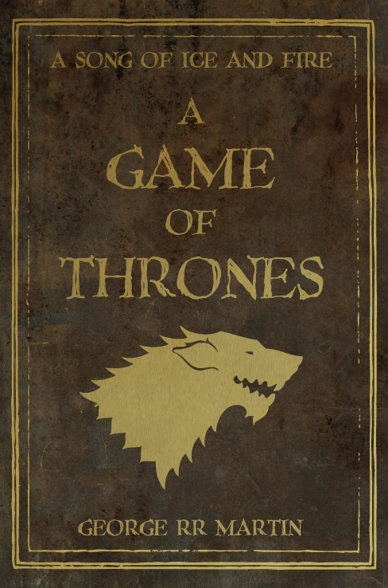
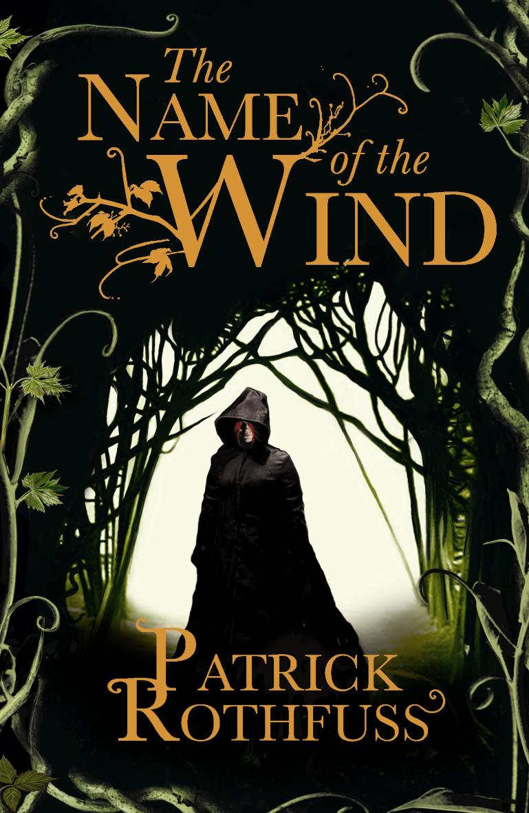

A Game of Thrones
A Game of Thrones is the first novel in A Song of Ice and Fire, a series of fantasy novels by American author George R. R. Martin. It was first published on August 1, 1996. The novel won the 1997 Locus Award[2] and was nominated for both the 1997 Nebula Award[2] and the 1997 World Fantasy Award.[3] The novella Blood of the Dragon, comprising the Daenerys Targaryen chapters from the novel, won the 1997 Hugo Award for Best Novella. In January 2011 the novel became a New York Times bestseller[4] and reached #1 on the list in July 2011.[5]
In the novel, recounting events from various points of view, Martin introduces the plot-lines of the noble houses of Westeros, the Wall, and the Targaryens. The novel has inspired several spin-off works, including several games. It is also the basis for the first season of Game of Thrones, an HBO television series that premiered in April 2011. A March 2013 paperback TV tie-in re-edition was also titled Game of Thrones, excluding the indefinite article "A".[6]

Lord of the rings
The Lord of the Rings is an epic high-fantasy novel written by English author J. R. R. Tolkien. The story began as a sequel to Tolkien's 1937 fantasy novel The Hobbit, but eventually developed into a much larger work. Written in stages between 1937 and 1949, The Lord of the Rings is one of the best-selling novels ever written, with over 150 million copies sold.[1]
The title of the novel refers to the story's main antagonist, the Dark Lord Sauron,[note 1] who had in an earlier age created the One Ring to rule the other Rings of Power as the ultimate weapon in his campaign to conquer and rule all of Middle-earth. From quiet beginnings in the Shire, a hobbit land not unlike the English countryside, the story ranges across Middle-earth, following the course of the War of the Ring through the eyes of its characters, not only the hobbits Frodo Baggins, Samwise "Sam" Gamgee, Meriadoc "Merry" Brandybuck and Peregrin "Pippin" Took, but also the hobbits' chief allies and travelling companions: the Men Aragorn son of Arathorn, a Ranger of the North, and Boromir, a Captain of Gondor; Gimli son of Glóin, a Dwarf warrior; Legolas Greenleaf, an Elven prince; and Gandalf, a Wizard.

The Name of the Wind
The Name of the Wind (The Kingkiller Chronicle: Day One) is a fantasy novel by Patrick Rothfuss, the first book in a series called The Kingkiller Chronicle. It was published in 2007 by DAW Books with two possible hardcovers: one features the face of the Green Man with the title letters in silver and the other shows the figure of Kvothe with the letters printed in gold. A new cover was released in subsequent reprints, depicting a cloaked figure under a dark sky in a windy field.
Rothfuss wrote The Name of the Wind during his nine-year advance toward his B.S. in English. He drew inspiration from the range of college courses he explored, and from his personal interests and hobbies. A short story excerpted from the novel The Wise Man's Fear (sequel to The Name of the Wind),[1] "The Road to Levinshir", won the Writers of the Future contest in 2002, leading to the book's publication. The Wise Man's Fear itself was released on March 1, 2011 by DAW Books.